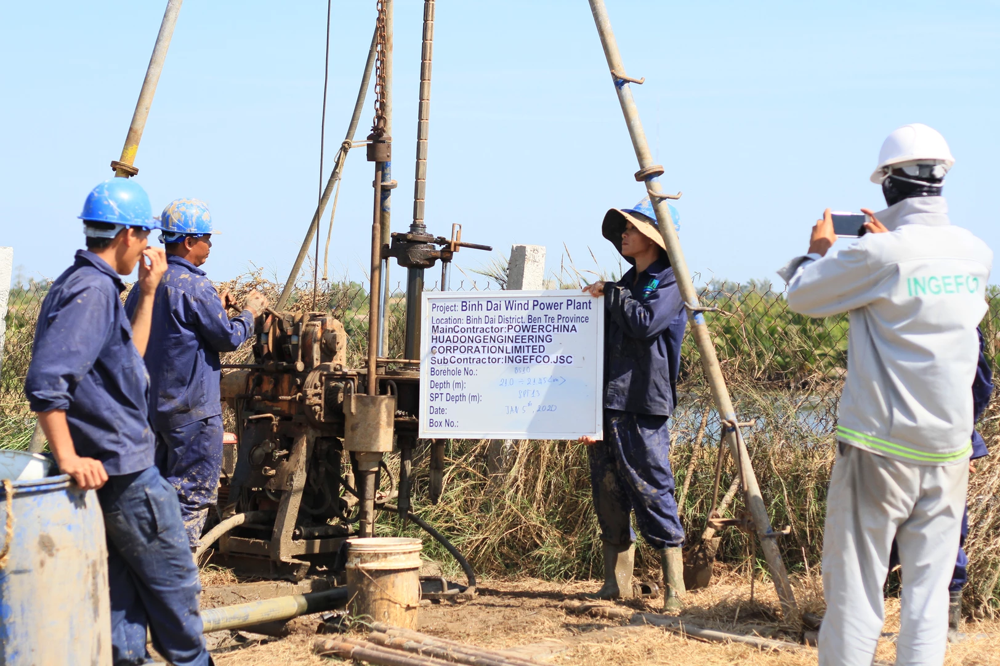
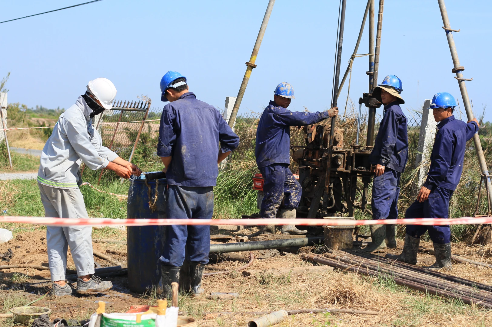

KHẢO SÁT ĐỊA KỸ THUẬT
VÀ THÍ NGHIỆM TRONG PHÒNG




KHẢO SÁT ĐỊA KỸ THUẬT:
Khảo sát Địa kỹ thuật nhằm mục đích xác định cấu trúc địa tầng, đặc điểm cấu tạo, kiến tạo của đất đá, xác định các tính chất cơ lý của các lớp đất đá, điều kiện nước dưới đất và các tai biến địa chất phục vụ cho công tác quy hoạch, thiết kế và xử lý nền móng công trình…..
Với đội ngũ bao gồm các chuyên gia, kỹ sư giàu kinh nghiệm và trang thiết bị hiện đại được nhập từ các hãng nổi tiếng như Humboltd, Slope Indicator, Geokon (Mỹ), GeoNor (Nauy), GeoMil (Hà Lan), PASI (Italy), APAGEO (Pháp)... kèm theo những phần mềm xử lý địa kỹ thuật tân tiến, được cập nhật mới nhất trên thế giới như: Geotechnical Software 7.0, CPTask, Res1D, Res2D, PASI Gea3, InterSism, Humboltd, CDAS, Midas GTS NX 2015... Chúng tôi tự tin đáp ứng được các yêu cầu tiêu chuẩn Việt Nam (TCVN), tiêu chuẩn Hoa Kỳ (ASTM), BS, AASHTO hoặc JIS……
THÍ NGHIỆM TRONG PHÒNG:
Sau khi hoàn thành công tác hiện trường, các mẫu đất, đá được chuyển về phòng thí nghiệm và thực hiện thí nghiệm các nội dung sau:
- Thí nghiệm phân tích thành phần hạt.
- Các chỉ tiêu vật lý mẫu đất nguyên dạng (Độ ẩm tự nhiên, tỷ trọng, dung trọng ướt, dung trọng khô, dung trọng bão hòa, hệ số rỗng, độ lỗ rỗng, độ bão hòa, dung trọng khô lớn nhất, dung trọng khô nhỏ nhất và độ chặt tương đối).
- Giới hạn Atterberg (GH chảy, dẻo).
- Góc nghỉ của đất cát.
- Thí nghiệm nén cố kết (Cv, Ch).
- Thí nghiệm nén một trục nở hông (Qu).
- Thí nghiệm cắt trực tiếp (cắt nhanh và cắt nhanh cố kết).
- Thí nghiệm nén ba trục (sơ đồ UU, CU và CD).
- Hệ số dẫn nhiệt của đất.
- Thí nghiệm hóa đất ăn mòn bê tông và kết cấu thép.
- Thí nghiệm phân tích hóa nước đơn giản.